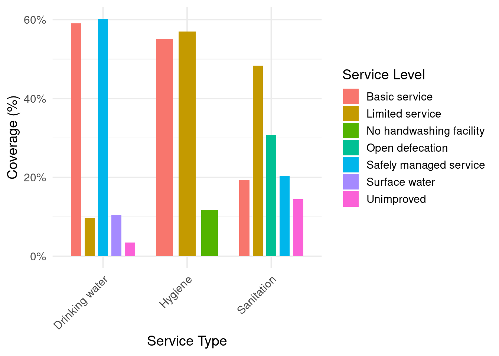
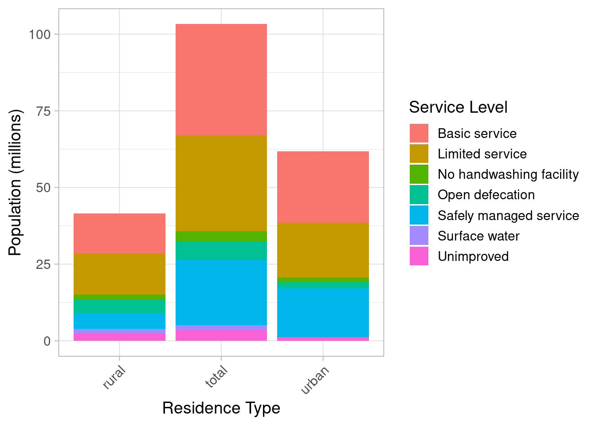

if(!require(dplyr)) install.packages("dplyr")Loading required package: dplyr
Attaching package: 'dplyr'The following objects are masked from 'package:stats':
filter, lagThe following objects are masked from 'package:base':
intersect, setdiff, setequal, unionif(!require(ggplot2)) install.packages("ggplot2")Loading required package: ggplot2if(!require(kableExtra)) install.packages("kableExtra")Loading required package: kableExtra
Attaching package: 'kableExtra'The following object is masked from 'package:dplyr':
group_rowsif(!require(scales)) install.packages("scales")Loading required package: scalesif(!require(readr)) install.packages("readr")Loading required package: readr
Attaching package: 'readr'The following object is masked from 'package:scales':
col_factorif(!require(here)) install.packages("here")Loading required package: herehere() starts at /cloud/projectlibrary(dplyr)
library(ggplot2)
library(kableExtra)
library(scales)
library(readr)
library(here)
processed_data <- read_csv(here::here("data/processed/processed_service_data.csv"))Rows: 39 Columns: 6── Column specification ────────────────────────────────────────────────────────
Delimiter: ","
chr (4): service_type, residence_type, service_level, Region
dbl (2): coverage, population
ℹ Use `spec()` to retrieve the full column specification for this data.
ℹ Specify the column types or set `show_col_types = FALSE` to quiet this message.# Summary Statistics Table
summary_table <- processed_data %>%
summarise(
mean_coverage = mean(coverage, na.rm = TRUE),
median_coverage = median(coverage, na.rm = TRUE),
sd_coverage = sd(coverage, na.rm = TRUE),
total_population = sum(population, na.rm = TRUE),
n_regions = n_distinct(Region)
)
kable(summary_table,
caption = "Summary statistics of key WASH variables.",
booktabs = TRUE) %>%
kable_styling(full_width = FALSE)| mean_coverage | median_coverage | sd_coverage | total_population | n_regions |
|---|---|---|---|---|
| 23.07667 | 17.64 | 19.05255 | 206564482 | 13 |
# Data Visualisation 1 – Coverage by Service Type
ggplot(processed_data, aes(x = service_type, y = coverage, fill = service_level)) +
geom_bar(stat = "identity", position = position_dodge(width = 0.8), width = 0.6) +
labs(
x = "Service Type",
y = "Coverage (%)",
fill = "Service Level"
) +
scale_y_continuous(labels = function(x) paste0(x, "%")) +
theme_minimal(base_size = 14) +
theme(
axis.text.x = element_text(angle = 45, hjust = 1),
legend.position = "right"
)
## Data Visualisation – Population by Residence Type
ggplot(processed_data, aes(x = residence_type, y = population/1e6, fill = service_level)) +
geom_col(position = "stack") +
labs(
x = "Residence Type",
y = "Population (millions)",
fill = "Service Level"
) +
scale_y_continuous(labels = scales::comma) +
theme_light(base_size = 14) +
theme(
axis.text.x = element_text(angle = 45, hjust = 1),
legend.position = "right"
)Warning: Removed 2 rows containing missing values or values outside the scale range
(`geom_col()`).
# Data Visualisation 2 – Population by Region
ggplot(processed_data, aes(x = Region, y = population/1e6, fill = service_level)) +
geom_col(position = "stack") +
labs(
x = "Region",
y = "Population (millions)",
fill = "Service Level"
) +
scale_y_continuous(labels = scales::comma) +
theme_light(base_size = 14) +
theme(
axis.text.x = element_text(angle = 45, hjust = 1),
legend.position = "right"
)Warning: Removed 2 rows containing missing values or values outside the scale range
(`geom_col()`).